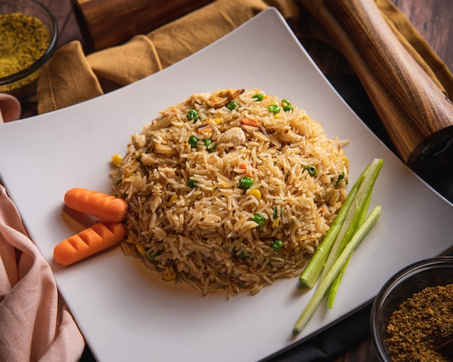

Friedrice

Chicken fried rice is a popular dish in many Asian cuisines, particularly in Chinese and Thai cuisine. It typically consists of cooked rice that has been stir-fried in a wok or pan with chopped chicken, eggs, vegetables (such as peas, carrots, and onions), and seasonings (such as soy sauce, garlic, and ginger).
To make chicken fried rice, the rice is usually first cooked and cooled to reduce its moisture content, making it easier to fry. The chicken is then typically diced into small pieces and cooked in a separate pan until it is fully cooked and slightly browned.
Ingredients
- 3 cups cooked white rice (preferably chilled)
- 2 chicken breasts, diced into small pieces
- 2 eggs, lightly beaten
- 1 cup frozen peas and carrots, thawed
- 1 small onion, chopped
- 2 cloves garlic, minced
- 2 tablespoons vegetable oil
- 2 tablespoons soy sauce
- Salt and pepper to taste
Steps
- Heat a wok or large skillet over high heat. Add 1 tablespoon of vegetable oil and swirl it around the pan to coat it.
- Add the diced chicken to the pan and stir-fry until it is cooked through and slightly browned. Remove the chicken from the pan and set it aside.
- In the same pan, add another tablespoon of vegetable oil and swirl it around the pan to coat it. Add the beaten eggs and stir-fry until they are scrambled and cooked through.
- Add the remaining tablespoon of vegetable oil to the pan and swirl it around to coat the pan. Add the chopped onion and garlic to the pan and stir-fry until the onion is translucent and the garlic is fragrant.
- Add the thawed peas and carrots to the pan and stir-fry until they are slightly softened.
- Add the cooked rice to the pan and stir-fry until it is heated through and slightly crispy.
- Add the cooked chicken and scrambled eggs back to the pan with the rice and vegetables.
- Add the soy sauce to the pan and stir-fry everything together until it is well combined.
- Season with salt and pepper to taste.
- Serve the chicken fried rice hot, garnished with chopped green onions or cilantro if desired.